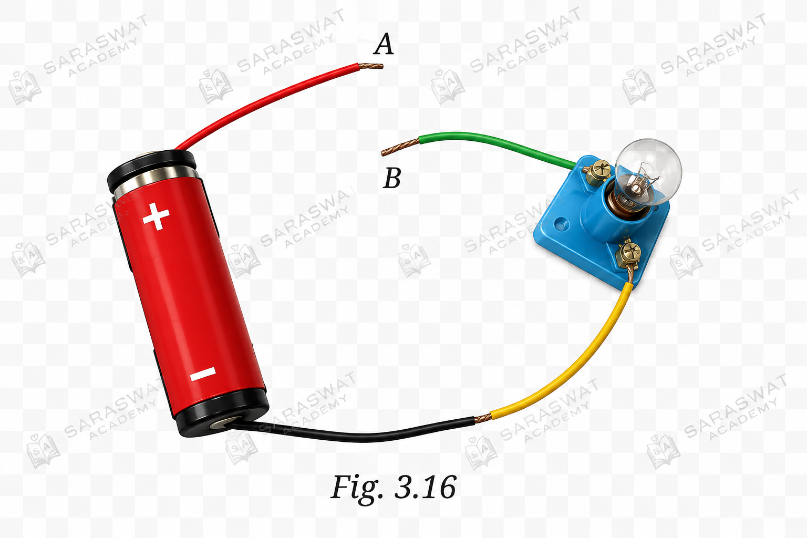
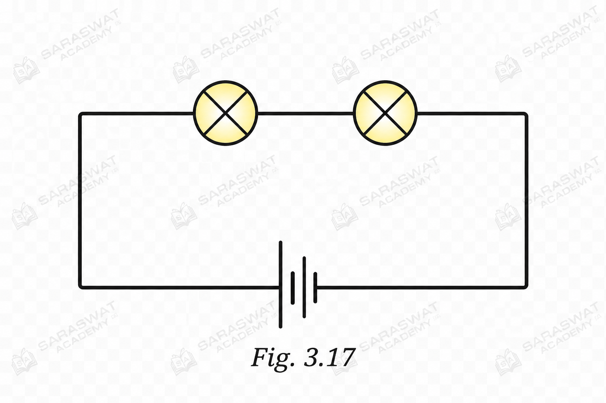
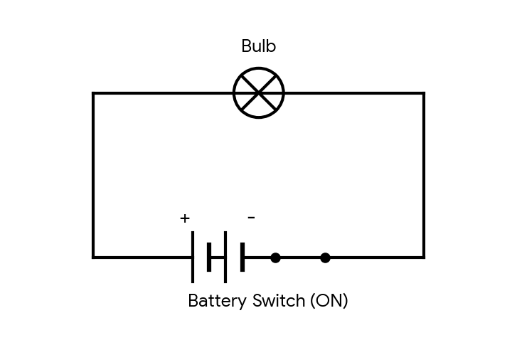
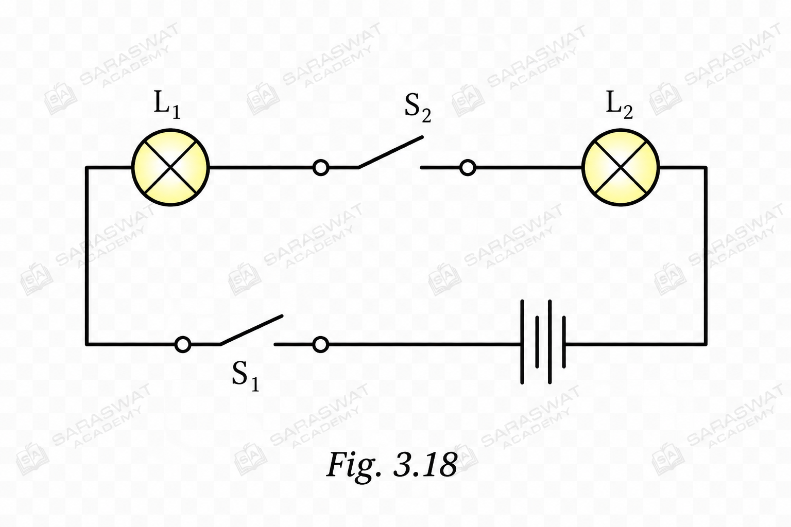
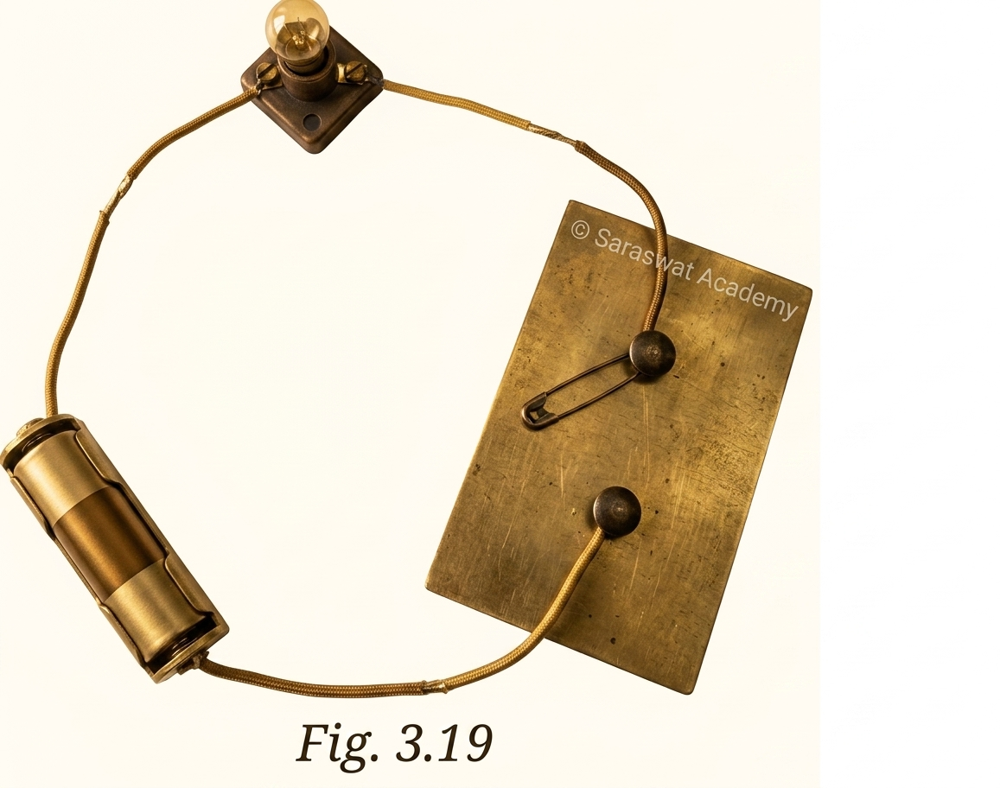
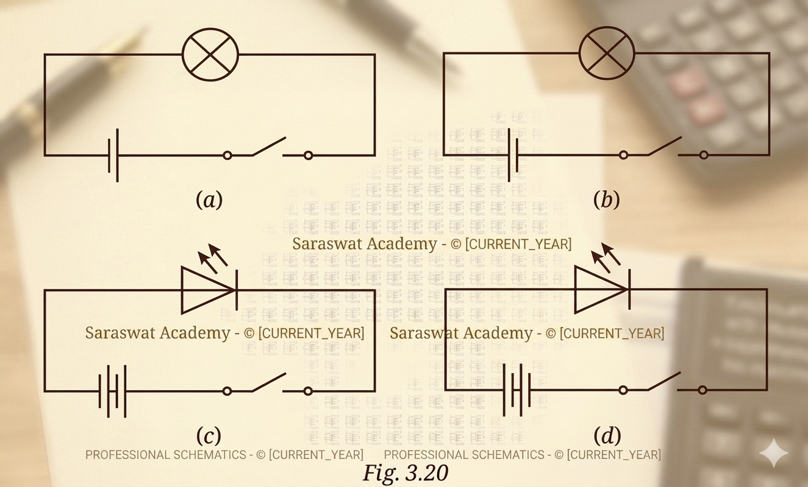
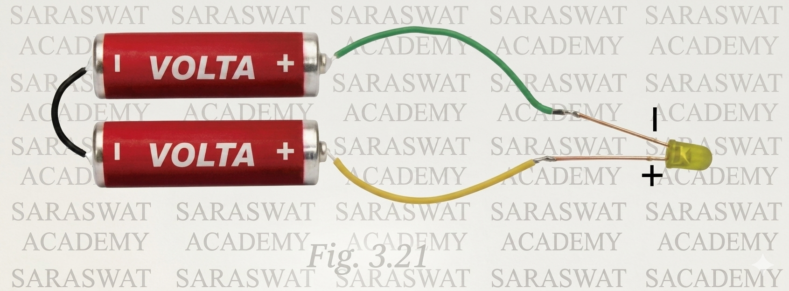

SCIENCE CLASS- 7
CHAPTER-3 (Electricity – Circuits and their Components)
Let Us Enhance Our Learning
1. Choose the incorrect statement.
Answer: (i) A switch is the source of electric current in a circuit.
A switch is not a source of electric current. An electric cell or battery is the source of current. A switch only helps to complete or break the circuit.
2. Observe Fig. 3.16. With which material connected between the ends A and B, the lamp will not glow?

Answer: The lamp will not glow if an insulator such as plastic, rubber, wood, glass, paper, or wax is connected between A and B.
Insulators do not allow electric current to pass through them, so the circuit remains incomplete.
3. In Fig. 3.17, if the filament of one of the lamps is broken, will the other glow? Justify your answer.

Answer: No, the other lamp will not glow.
The two lamps are connected in the same circuit. If the filament of one lamp breaks, the circuit becomes open and electric current cannot flow through any part of the circuit. Therefore, both lamps will remain off.
4. A student forgot to remove the insulator covering from the connecting wires while making a circuit. Will the lamp glow?
Answer: No, the lamp will not glow.
The plastic covering on the wire is an insulator. If it is not removed from the ends of the wire, electric current cannot pass from the wire to the cell or lamp terminals. Hence, the circuit remains incomplete.
5. Draw a circuit diagram for a simple torch using symbols for electric components.
Answer:

Circuit Components Used
- Battery: Represents a combination of two electric cells connected in series to provide power.
- Bulb: The load component that glows when the circuit is complete.
- Switch: Controls the flow of electricity (shown in the ON / Closed position here so the torch lights up).
- Wires: Conductive paths connecting all components in a continuous loop.
A simple torch circuit consists of a battery, a switch, connecting wires, and a lamp connected in a closed circuit.
6. In Fig. 3.18 answer the following.

(i) If S₂ is ON and S₁ is OFF:
Only L₁ and L₂ will glow because the upper path is complete.
(ii) If S₂ is OFF and S₁ is ON:
No lamp will glow because the upper path containing the lamps is broken.
(iii) If S₁ and S₂ are both ON:
L₁ and L₂ will glow because the circuit is complete.
(iv) If S₁ and S₂ are both OFF:
No lamp will glow because the circuit is open.
7. Vidyut has made the circuit shown in Fig. 3.19. Even after closing the circuit, the lamp does not glow. What may be the reasons?

Answer:
Possible reasons are:
- The electric cell may be exhausted.
- The lamp may be fused.
- The switch may not be making proper contact.
- The wire connections may be loose.
- The wire may be broken internally.
- The insulation may not have been removed from wire ends.
- The lamp terminals may not be connected properly.
To find the fault, each component should be tested one by one using a working cell, lamp, switch, and wires.
8. In Fig. 3.20, in which case(s) will the lamp/LED not glow when the switch is closed?

Answer: The lamp/LED will not glow in case (d).
LEDs glow only when connected with correct polarity. In case (d), the LED is connected in reverse direction, so electric current cannot pass through it.
9. Suppose the '+' and '–' symbols cannot be read on a battery. Suggest a method to identify the two terminals.
Answer:
Observe the shape of the terminals carefully.
- The terminal with the small raised metal cap is the positive terminal (+).
- The flat metal surface is the negative terminal (–).
This method can be used even when the symbols are not visible.
10. Design an activity to identify which cells are working.
(i) Items Required:
- Cells A, B, C, D, E and F
- A small torch bulb or LED
- Connecting wires
- Cell holder
(ii) Procedure:
- Connect one cell at a time in a simple circuit with the bulb.
- Observe whether the bulb glows.
- Repeat the process for all six cells.
- Record the observations.
(iii) Observation:
The cells for which the bulb glows are working cells. The cells for which the bulb does not glow are not working.
11. Using an LED that requires two cells in series to glow, Tanya made the circuit shown in Fig. 3.21. Will the LED glow? If not, how should it be connected?

Answer: No, the LED will not glow.
The LED terminals are connected incorrectly. For the LED to glow:
- The longer wire (positive terminal) of the LED must be connected to the positive terminal of the battery.
- The shorter wire (negative terminal) of the LED must be connected to the negative terminal of the battery.
After making these correct connections, the LED will glow.